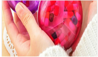
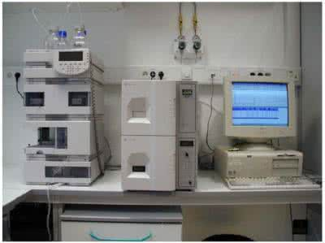
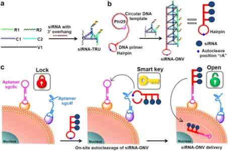
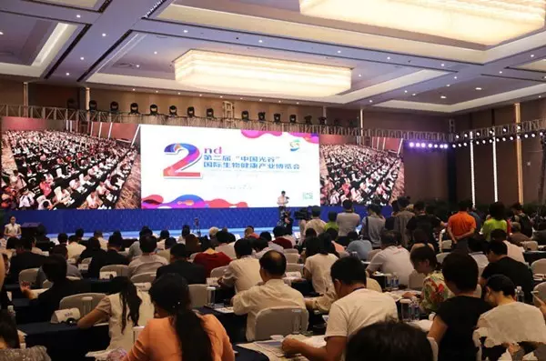
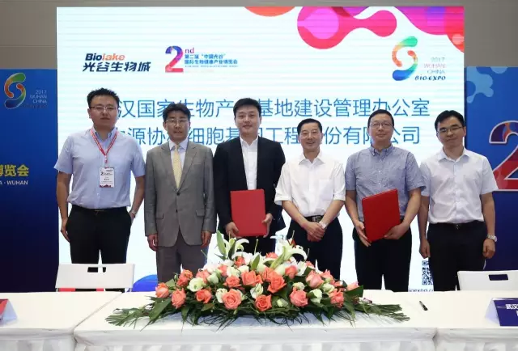
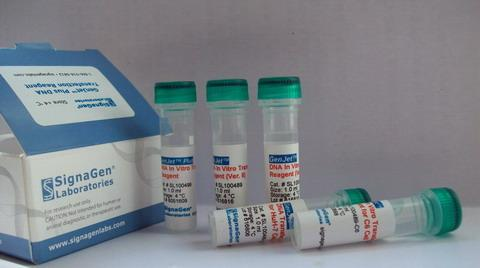

- 有效增强慢病毒感染效率 
- 一 产品介绍 英格恩生物公司（Engreen Biosystem Co,Ltd.）是专业的转染试剂研发生产厂商。EnvirusTM-LV是英格恩生物公司研发合成的针对慢病毒 感染的增强剂，该试剂采用纳米技术合成。EnvirusTM-LV通过物理作用将病毒富集在细胞表面以增强感染效率。由于纳米技术的应用，EnvirusTM-LV在大幅度提高慢病毒感染效率的同时，细胞毒性非常小，并且不干扰细胞生理功能
- 科研助手2017-07-07 10:40:28
- western-blot中ECL发光检测实验步骤 
- ECL Western特异发光检测试剂盒用于辣根过氧化物酶(HRP)标记的蛋白或核酸检测。下面以engreen的超敏型ECL发光液Enlight-Plus为例，说一下检测实验步骤。 1. 常规电泳、转膜、HRP 标记抗体或核酸探针孵育、洗膜。以下操作在室温进行。 注意：Enlight-Plus 推荐的抗体稀释度为: 储存液浓度为1mg/ml 的一抗推荐稀释度 储存液浓度为1m
- 科研助手2017-07-07 10:39:438
- 神经元原代细胞培养步骤
- 小鼠大脑皮层神经元原代培养步骤： 1、 于无菌条件下切取鼠头并以75%酒精浸泡1min，解剖出完整鼠脑； 2、 预冷解剖液中分离去除软膜、血管、取大脑皮质漂洗，用眼科剪将皮质反复剪切成碎块； 3、 移入培养皿中，吸除解剖液加入0.25%胰蛋白酶2m1，37℃培养箱中消化30min； 4、 将皮层组织碎块移入离心
- 科研助手2017-07-04 11:04:59
- 成功转染siRNA细胞铺板密度为什么很重要？ 
- 英格恩生物RNA转染试剂成功转染siRNA的细胞会产生目标基因表达下调，但未成功转染的细胞却不受影响，这时转染效率和总的细胞数量就很重要，一般细胞数量较少时转染效率高，一些试剂由于本身毒性的影响，太低的细胞数量时毒性明显，所以会要求较高的细胞密度（汇合度），顺便说一句，看一个转染试剂的毒性，看它要求转染时的细胞密度就知道了。siRNA的转染和DNA的转染不一样，DNA的转染是过量表达，死亡一些细胞
- 科研助手2017-07-04 10:28:35
- 第二届“中国光谷”国际生物健康产业博览会在汉开幕 
- 6月30日，由国家卫生和计划生育委员会支持，武汉市人民政府主办，武汉东湖新技术开发区管委会承办，以“创新引领、生命健康”为主题的第二届“中国光谷”国际生物健康产业博览会（以下简称生博会）开幕式及高层论坛在中国光谷科技会展中心举行。图为：第二届生博会开幕式现场 湖北省委副书记、武汉市委书记陈一新宣布大会开幕，国家卫计委医药卫生科技发展研究中心主任李青、湖北省副
- 小七 2017-07-03 13:50:32
- 生博会首日四大项目集中签约 
- 6月30日下午，第二届“中国光谷”国际生物健康产业博览会召开首日，四大项目在现场集中签约，涉及企业落户、园区合作、企业投资等成果。 长江日报记者了解到，中源协和细胞基因工程股份有限公司（以下简称“中源协和”）是中国最早投资生物资源储存项目的企业，也是国内沪深两市中唯一一家以“细胞+基因”双核驱动发展的生命科技企业，国内下设子公司数十家，海外设子公司三家，是一家跨国高科技企业。 按照
- 小七 2017-07-03 13:50:13
- 回肠造口饮食管理 
- 2017-06-23 炎炎夏日，很多造口朋友会因为炎热的天气而出现食欲不振、大小便出现异常、身体不适等一系列问题……此期小编为回肠造口朋友们介绍一下怎么合理饮食。 那我们先了解下什么是回肠造口?回肠的消化特性是什么呢？ 回肠造口回肠造口是第二种最常见的造口。通常是因为大肠被切除或小肠的末端有病变，将回肠末端在腹壁做一个开口，回肠造口一般位于右下腹，突出皮肤
- WALLE 2017-07-03 13:49:58
更多……
- 今日推荐作家
- 查看全部作者 >
- 热门排行